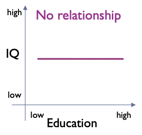

Introduction to Quantitative Studies¶
Where are we in the Process?

Data Collection¶
Typically takes place in a laboratory
- Able to control everything
Typed of collected data:
- Anything that can be understood as a number
- Time
- Performance metrics
- Success rates
- Answers to questionnaires
- The difference is that data is structured and we usually collected them in order to answer a question!
Examples of interesting questions across different fields¶
- Why sometimes people behave like idiots? (psychology)
- What’s the difference between Denmark and Germany in relation to racism (sociology/anthropology)
- What is the effect of smart phone usage to eye-sight? (medicine)
- What is the relation between sleep and athletic performance (sports studies)
- Which platform is fastest and why? (software)
- How can we make more money out of product X? (business)
- Why prototype A is better than prototype B? (Interaction Design)
- Why people like Donald Trump? (political science)
How do we often get answers to our questions?¶
Case 1: We use our Intuition
Or the “common sense”: We make general conclusions about the world around us based on anecdotal evidence (for example our own experiences/our cultural background).
- “Samsung is better than Apple”
- “All Arabs are terrorists”
More stuff (optional):
Case 2: We trust Authority
We tend to believe people or organizations because we assume they are credible.
- “Danes do not care about refuges” (European media?)
- “Gay couples are terrible parents” (Church?)
Examples of wrong answers - Intuition¶
- “Since the first appearance of Rihanna, bacon sales have increased” \to Listeners of Rihanna eat bacon
- “Since Kill Bill, yellow uniform sales have increased drastically” \to More people want to look like Uma Thurman
- "If the Redskins win their last home game before the election, the party that won the previous election wins the next election and that if the Redskins lose, the challenging party's candidate wins.” \to Fulfilled in 17 our of 19 US presidential elections since 1937
More stuff (optional):
Examples of wrong answers - Authority¶

How do we get valid answers to our questions?¶
- We use the Scientific Approach
- Intuition and/or authority are used to generate ideas about a phenomenon/behavior
- Skepticism: ideas must be evaluated on the basis of careful logic and results from scientific investigations
- Empiricism: knowledge is based on observations and the study of reality
Example
- We believe mobile application X is more usable than Z
- we need to run an experiment in order to observe representative user’s and acquire scientific knowledge
- Even if we prove we are wrong, this knowledge is useful (falsifiability)
Questions and answers, opinions and claims¶
-
Which questions are scientific?
- The ones that can be tested by collecting and analyzing quantitative data!
-
Which answers are evidence based and not opinions?
- The ones that emerged by applying the Scientific approach!
How are all these related to HCI and mHCI?¶
- Because HCI and mHCI is about studying users’ behaviors/feelings/emotions when they interact with technological artifacts.
- We study Interactions to:
- Describe users’ behaviors
- Predict their behavior in the future
- Determine the cause of their behaviors
- Explain their behavior
Quantitative methods in mHCI¶
Quantitative methods emphasize objective measurements and the statistical, mathematical, or numerical analysis of data collected through polls, questionnaires, surveys, or logfiles, using computational techniques.
Quantitative research focuses on gathering numerical data and generalizing it across groups of people, or to explain a particular phenomenon
Quantitative Research Methods in mHCI¶
Case studies
- Intensive empirical investigations of contemporary phenomena within small size entities such as groups, organizations, individuals, systems or tools in real-life context with the researcher distinct from the phenomena being studied.
Field studies
- Characterized by taking place in “the real world” covering a range of quantitative approaches in which a number of independent variables are manipulated.
Usage Studies
- Large-scale log-file based test-scenario in which a newly designed system is exposed to its target users in order to test its resilience under real-use conditions, and if and how it is employed for the tasks for which it was intended.
- A/B testing
Lab experiments/studies
- Characterized by taking place in a controlled environment created for the purpose of research or in dedicated laboratories allowing a detailed focus on specific phenomena of interest with a large degree of experimental control.
Surveys
- Informs research gathers large amounts of data through various techniques such as questionnaires and interviews from a known sample of selected respondents assumed to be independent of their environment.
Quantitative Research Methods Purposes in mHCI¶
Understanding
- The purpose of research focusing on finding the meaning of studied phenomena through, for example, frameworks or theories developed from collected data.
Engineering
- The purpose of research focused towards developing new systems or parts of systems, for example an interaction technique for a mobile device, or a mobile application or device.
Re-engineering
- The purpose of research focusing on improving existing systems by redeveloping them such as, for example, adapting a web browser to a small display
Evaluating
- The purpose of research assessing or validating products, theories or methods, for example, the usability or user experience of a specific application, or a theory of interaction.
Describing
- The purpose of research focusing on defining desirable properties of products, for example, a mobile guide system.
Quantitative Research Process¶
- Theory
- Hypothesis
- Research Design
- Devise measures
- Select research sites
- Select research subjects
- Collect Data
- Prepare and Process Data
- Analyze Data
- Derive Findings
- Write up findings
- Go back to 1
Initial Steps¶

Theory:
- An explanation of a situation/phenomenon
Research Question
- A description of the broad topic of study
Hypothesis
- A specific idea or question which can be tested through empirical investigation (using the scientific approach)
Prediction
- A deliberate guess to answer the Hypothesis
Example¶
Theory
- “There are differences among groups of people on how they perceive the mobile Facebook Interface”
Research Question
- “Are there any differences among groups of people on how they perceive the mobile Facebook Interface?"
Hypothesis
- “Males perceive the mobile Facebook Interface as more usable than Females”
Prediction
- “Males are more likely to perceive the mobile Facebook Interface as more usable”
Research Question vs Hypotheses¶
Research Question: “Are there any differences among groups of people on how they perceive the Facebook Interface?"
- Hypothesis A: “Males perceive the mobile Facebook Interface than as more usable than Females”
- Hypothesis B: “Rich perceive the mobile Facebook Interface as more usable than Poor”
- Hypothesis C: “Europeans perceive the mobile Facebook Interface as more usable than Asians”
- Hypothesis D: “Experts perceive the mobile Facebook Interface as more usable than Novices”
- ...
- Hypothesis N: ...
Null and Alternative Hypothesis¶
- Null hypothesis: There is no difference between the conditions
- Alternative hypothesis: There is difference between the conditions
- They have to be mutually exclusive
Example
-
Null hypothesis “ H~0~: Males do not perceive the mobile Facebook Interface as more usable than Females”
-
Alternative hypothesis “H~1~: Males perceive the mobile Facebook Interface as more usable than Females”
Why do we have null and alternative hypothesis?¶
- Long tradition in experimental research
- In statistics we do not test if two conditions are different
- We do test if there are the same!
Example
We take a random sample of mobile Facebook users. We assume there is no difference between sexes in relation to usability (null hypothesis, H~0~, is true).
Through a statistical test we check if there are significant differences between sexes.
If there are no statistically significant differences, then we accept the H~0~ as true.
If there are differences then we reject H~0~, and we can conclude that the alternative hypothesis (H~1~) is true.
Significance: there is a very low probability that the result is occurring by chance
Variables¶
H~1~: “Males perceive the mobile Facebook Interface as more usable than Females”
- In order to test our hypothesis we need to measure or manipulate something. All the things we can measure or manipulate are called variables.
- Any variable must have more than two levels
Operational Definitions¶
For every variable we need a defined procedure to measure or manipulate it.
If there are many options, we need to select one. The selected procedure is called the operational definition of the variable
Example: Aggression
- The number of times a kid hits a toy
- The number of times a kid fights with another kid
- A score on a aggression questionnaire
- The number of times a kid cursed, etc.
Example: Usability
- Perceived usability
- Task completion times/rates, etc.
Adequacy of our Operational Definitions: Types of Construct Validity¶
- Construct Validity: The adequacy of our operational definition
- Content Validity: The content of our measure is linked to the true meaning of the variable
- Convergent Validity: Scores of our measure are related to other measures of the same construct
- Discriminant Validity: Scores of our measure are not related to other measures that are theoretically different
- Other types: face validity, predictive validity, concurrent validity
Measuring¶
- Every time we measure a variable there is an error
- The smaller the error, the better (obviously!)
- Standard units of measurement ensure the error is minimal
- Any examples of standard units of measurement? What about within software?
Reliability¶
- Refers to the consistency or stability of a measure
- If I measure the same thing twice I should have the same results
- The measurement error of a reliable measurement tool has less variability than an unreliable one
Assessing Reliability¶
- Test-retest reliability
- We measure the same thing twice and the results should be correlated (usually correlation coefficient >0.80)
- Internal consistency reliability. Used when multiple items are measuring the same variable (i.e. questionnaire)
- Split-half reliability
- We split the data randomly into two halves. The correlation of total score on a half of a measure should be high with the other half (Spearman-Brown split-half reliability coefficient)
- Cronbach’a alpha (α), the correlation of each item on the measure with every other item on the measure
Correlation Coefficient¶
- A numerical index of the strength of relationships between variables
- Most common: Pearson product-moment correlation coefficient (r)
- -1.00 \to 0.00 \to +1.00
- 0 = no relation at all
- + = positive linear
- - = negative lnear
Types of relationships between variables¶
- Education has an effect on IQ level
Positive Linear and Negative Linear
No relationship

Curvilinear
Types of Variables¶
Categorical¶
- Nominal Variable
- The levels do not hae any meaningful numerical, quantitative properties.
- Example: eye color, university degree, marital status, sex
- If there are only two levels its called a binary or dichotomous variable
- Ordinal variable
- Levels do have meaningful, quantitative properties, usually ordered
- Example: Exam grades, athlete placement on podium
- Usually distance among levels is not equal
Continuous¶
- Interval variable
- Different between levels are equal in size
- Thus, difference between 1 and 2 have same meaning as 6 and 7
- Example: Example, strongly agree/strongly disagree question, time, age
- Ratio variable
- Same as above, but 0 indicate absence of variable
Tricky part
- Continuous variables can be sometimes discrete, depending on the level of precision.
- We cannot answer on a questionnaire the value 4.32, but we assume that there is a continuum that the scale is following.
Categorizing a Variable¶
Making Studies¶
- Non experimental methods
- Descriptive investigations (Usage studies, surveys, etc.)
- Relational investigations (Case studies)
- Experimental methods
- Lab experiments
- Field experiments
Nonexperimental Methods¶
Often called correlational methods
- We make observations, or measures of the variables of interest in natural settings
- By asking people to describe their behaviour
- By making direct observations
- By recording log files, physiological reponses
- By examining public records
- ...
- Characteristics
- We can have data that two variables are correlated (or covary - they vary together) with each other
- We do not know which one is the cause or the effect
- Very good for having an initial understanding of a domain
Experimental Methods¶
- We basically make experiments
- They help us reducing the ambiguity of the results
- They help us deal with the directionality and confounding variable problem
When we are certain that there is an uncontrolled external (or extraneous) variable, then it is called a confounding variable
mHCI Example¶
Directionality Problem
Third variable Problem
Characteristics¶
- We manipulate a variable to measure its effect on another one
- We try to create situations (or treatments or conditions) where the proposed cause is present or absent
- We try to keep constant all the confounding variables across all the conditions (experiment control)
- We randomize the participants and other variables in order to minimize the influence of other possible external variables that might affect the results
Independent and Dependent Variables¶
- Independent variable
- Variable we think is the cause
- Variable that is independent of a participant’s behavior
- Variable that we manipulate in our experiment
- Dependent variable
- Variable we think is the effect, as it depends on the cause
- Variable that is dependent on a participant’s behavior
- The variable that we measure in our experiment
- Examples

- Sex has an effect on perceived usability
- Income has an effect on happiness
- Education has an effect on IQ level
- Input devices have an effect on efficiency
Descriptive Statistics Univariate Analysis¶
- Descriptive Statistics - numbers that describe our data
- Univariate analysis - the process of analysing one variable
Frequency Distribution¶
- A plot that shows how many times each value occurs
- Usually we have the values on the horizontal axes and the times it occurred on the vertical one
Normal Distribution¶
- In an ideal world our data should be distributed symmetrically around the center of all scores.
- If we draw a line in the center, the distribution should look the same on both sides
- Kurtosis, skew = 0

Ways a distribution can deviate from normal¶
- Skew - lack of symmetry (most scores are clustered at one end of the scale)
- Positively skewed distribution - it has a long tail to the right side
- Negatively skewed distribution - it has a long tail to the left side
- Kurtosis - pointiness
- Positive kurtosis (leptokurtic) - very pointy
- Negative kurtosis (platykurtic) - flatter than normal

Measures of central tendency¶
- Mode - the score that occurs the most
- It is the tallest bar in the distribution - we can have multimodal distributions
- Median - the middle score of a distribution
- We order the scores and we get the middle one (the one in position (n+1)/2) if not integer, we average the neighboring ones
- Mean - the average score
- We sum all the scores and divide by the number of scores